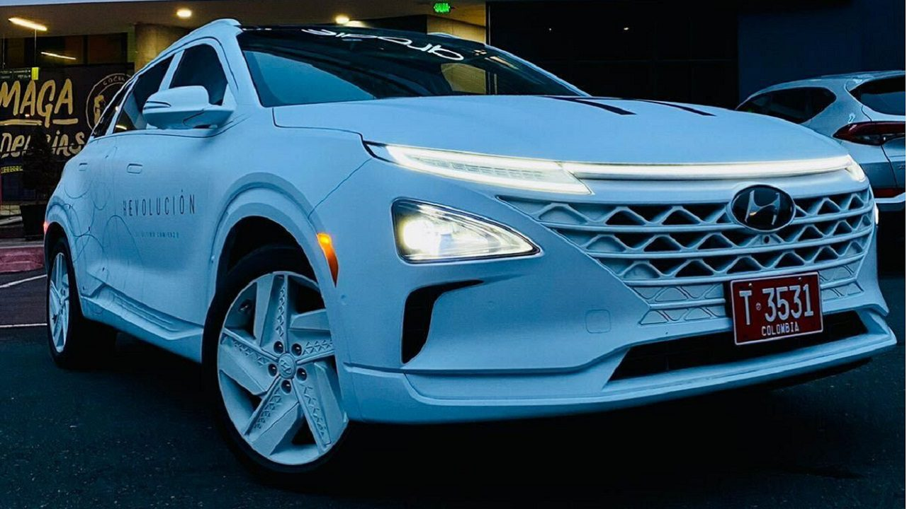

Autos a combustión diésel

Los autos a combustión diésel utilizan motores que funcionan con combustible diésel en lugar de gasolina. Son conocidos por su eficiencia en el consumo de combustible y su alto torque.
Autos eléctricos
Los autos eléctricos funcionan con motores eléctricos y baterías recargables en lugar de motores de combustión interna. Son una opción cada vez más popular debido a su menor impacto ambiental y costos de operación más bajos a largo plazo.